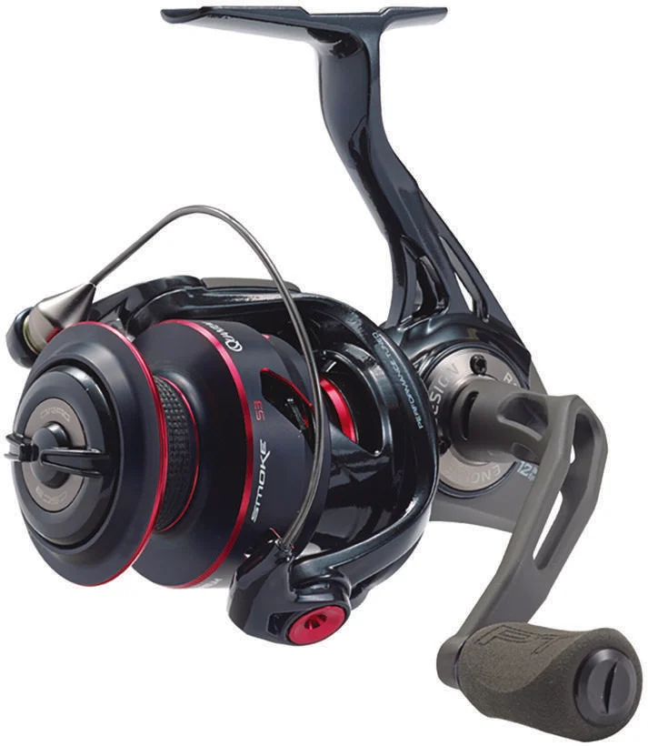

ReelCalc Reel Setup Guide
Quantum Smoke S3 15 Line Capacity & Reel Setup Guide
Built around a 15-size frame, the Quantum Smoke S3 15 (SM15XPT) is best matched to light freshwater, trout, and finesse. 6.4 oz, 27 inches of line pickup per handle turn, and 8 lb of published maximum drag define the working scale of this exact model. The combination of a 6.4-ounce body and 27 inches of pickup per turn fits light rods, fine-diameter line, and precision presentations.